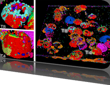

3rd IEEE Symposium on Biological Data Visualization
13-14 October 2013 // Atlanta, GA @ IEEE VIS
13-14 October 2013 // Atlanta, GA @ IEEE VIS

Data Contest
Update:
Submissions are now open. See the announcement!
Overview
Protein Mutations and their effect on Protein Function
- Identify "driver" mutations that change function, and "passenger" mutations that are just along for the ride.
- Develop new tools and new collaborations to help bio/life-science researchers solve pressing questions.
- Win prizes and get published at BioVis 2013
The 2013 BioVis contest focuses on the domain of protein function, and how protein sequences generate function. In particular, the contest asks whether, from a collection of mutations to a protein, the ones that are important (i.e. that cause the protein's functionality to change) can be segregated from the ones that are unimportant (i.e. that don't appear to affect function). The goal is to develop a visualization tool that can aid the working bio/life-sciences researcher in identifying important mutations within a larger set in a protein, provide biophysical insight into why those mutations affect function, and potentially suggest additional modifications to the protein that could be used to rescue functionality.
Predicting changes in protein functionality based on changes in sequence remains a significant challenge in the biophysical sciences. Despite burgeoning sequence data and an ever-increasing rate of acquisition, in all but the most trivial cases the answer the simple question "is this mutation likely to affect the function of this protein?", remains elusive.
Evolutionary pressure to maintain function has undoubtedly left its signature in the shared and differing properties of orthologous (belonging to differentiated species) proteins across the phylogenetic tree. However, progress in applying this data to predicting changes in function from changes in sequence has largely been stalled for decades, at least in part, due to the current approaches that use amino acid frequencies from a multiple sequence alignment and declare mutations to affect function only if they lie outside the distribution observed in the family.
Functional proteins, however, are 3-dimensional collections of atoms, and their functionality is determined by how reacting partners and substrates "see" them, in terms of electrostatic fields, topology and surface topography. No residue functions in isolation; therefore, it is the concerted biophysical properties of numerous residues that must be evaluated, to make accurate predictions about whether a mutation affects function. Additionally, to complicate matters current canonical approaches evaluate the acceptability of mutations based on their acceptability in the residue distribution of the family, rather than based on their acceptability in the parent protein.
A visualization tool that integrates 3D structural information and biophysical predictions for a protein, with distribution information from the multiple sequence alignment of the family of proteins with the same function, and with network information extractable from the family phylogeny, and that further could show where the characteristics of the parent and mutant either fit, or differed from the family consensus and from each other, would fundamentally improve researchers' ability to deal with questions in this important domain. The 2013 contest provides the sequence of a significantly mutated triosephosphate isomerase (TIM) that has had almost all functionality abolished by mutations towards family consensus, and poses the question, "Which of these mutations cause the functional defect, and what can be done to rescue functionality?".
We welcome entries that attempt to provide a comprehensive solution to the problem, or, those that focus on some discrete albeit different aspects. A discussion forum is available for for inter-contestant communications, and for providing access to domain scientists who can answer questions, or assist with access to the data.
Contact: contest@biovis.net
Follow us on Twitter
BioVis 2013 is an official symposium of


BioVis 2013 is affiliated with

Join ISCB and get a 20% member discount at BioVis'13.
BioVis 2013 Supportes
Silver:
Bronze:


Deadlines
Paper Deadline
- Abstract:
April 30, 2013
- Full Paper:
May 7, 2013
Poster Deadline
August 2, 2013
Data Contest Deadline
August 2, 2013
Redesign Contest Deadline
August 2, 2013